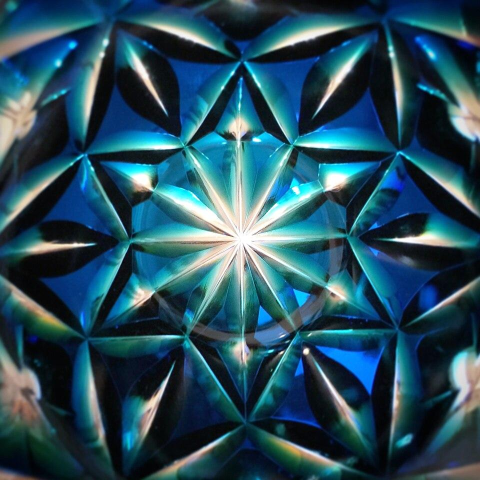

What is it?
This is a lost and revived craft. Satsuma kiriko is glass with patterns cut into coloured layers. It comes from the old Satsuma area, which is now Kagoshima.
Its colours include blue, purple, green and a famous deep red. (Google Arts & Culture, n.d.)
History
It was a favourite of Shimazu Nariakira, a lord of Satsuma in the mid-1800s. Later it lost popularity and disappeared.
In 1985 a new glass workshop was built to bring it back. Makers studied old writings, measured old glasses and used photographs. (Google Arts & Culture, n.d.)
Why is it endangered?
It disappeared after it lost favour, so the skills had to be worked out again by trial and error. It took several years just to make the red colour. (Google Arts & Culture, n.d.)
Its return shows that a craft can come back if people support it. It still needs customers and new makers to stay alive.
How you can help
- Visit Kagoshima and see the glass in person.
- Choose glass from makers who explain how and where it is made.
- Share its story as an example of a successful comeback.
Quick facts
- From Kagoshima
- Popular in the mid-1800s
- Revived in 1985
- Purple named after its lord added in 2005
Sources
- Rediscovering the Lost Crafts of Japan, Google Arts & Culture, n.d.
- Miyako Ramie Textiles, Kogei Japan, n.d.